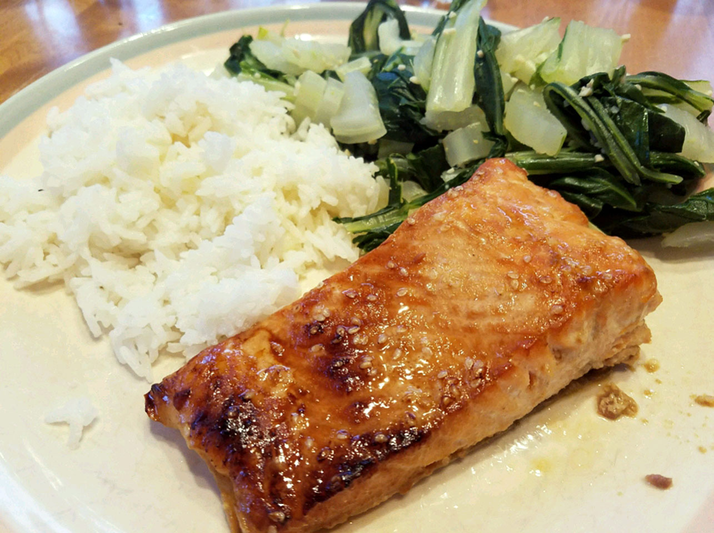

Teriyaki Salmon recipe

Description
Salmon is a favorite of my husband. This recipe never fails to be a hit, whether we broil the salmon in the oven or grill it outdoors. Pair it with some homemade teriyaki fried rice to complete your meal.
Ingredients
- ¼ cup sesame oil
- ¼ cup lemon juice
- ¼ cup soy sauce
- 2 tablespoons brown sugar, or more to taste
- 1 tablespoon sesame seeds
- 1 teaspoon ground mustard
- 1 teaspoon ground ginger
- ¼ teaspoon garlic powder
- 4 (6 ounce) salmon steaks